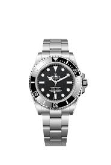
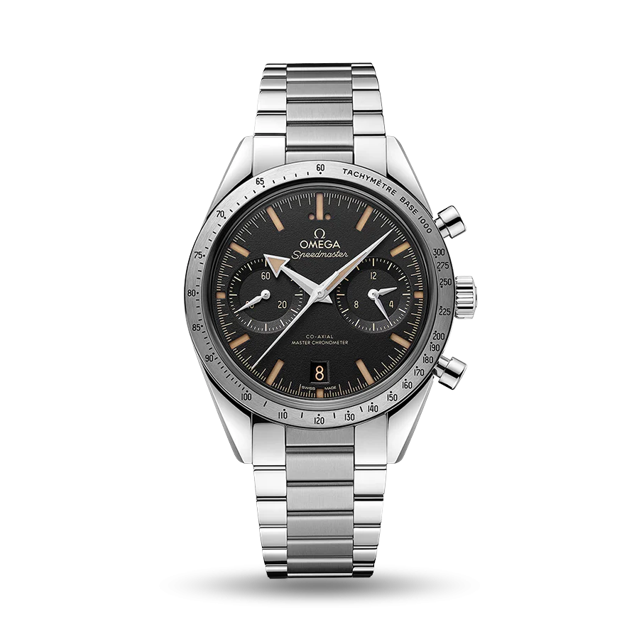
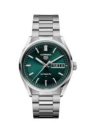
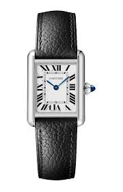
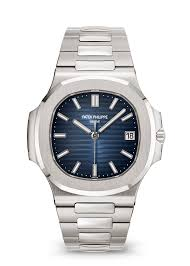
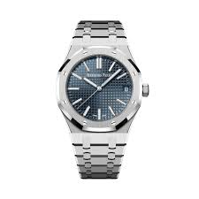
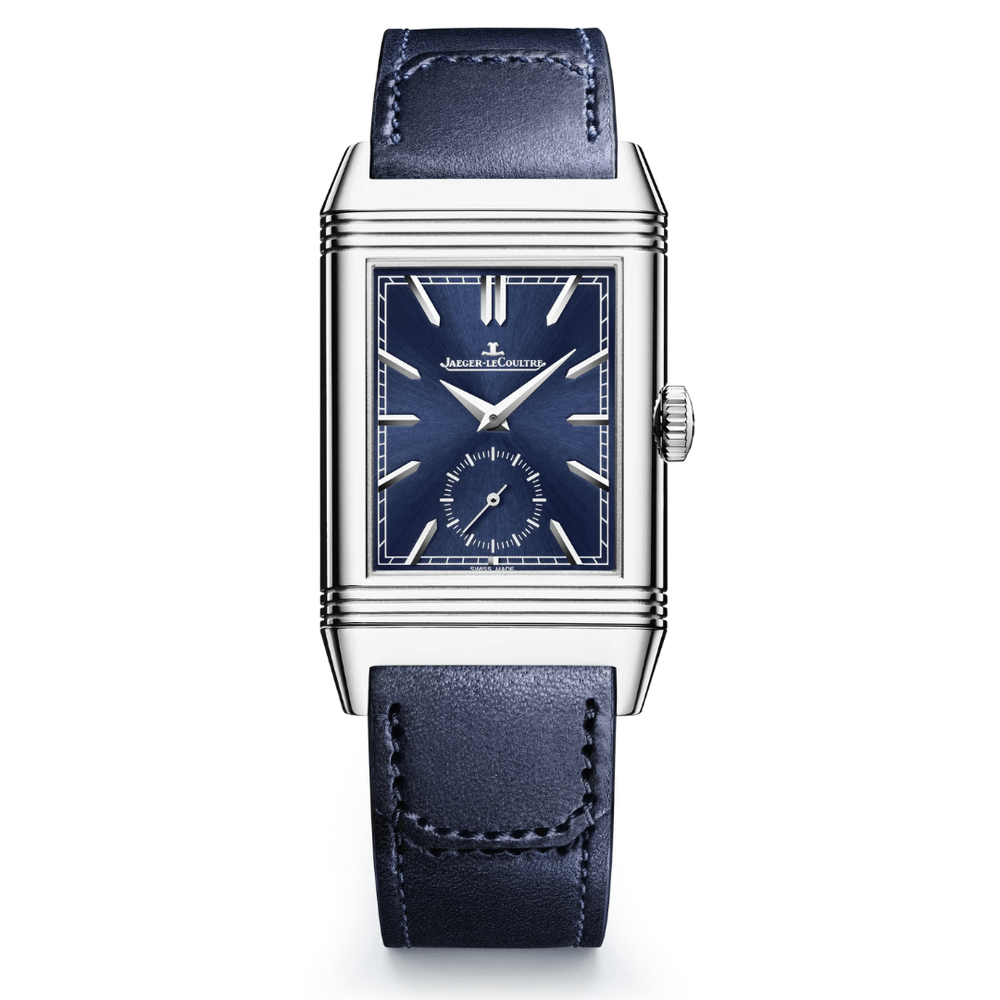
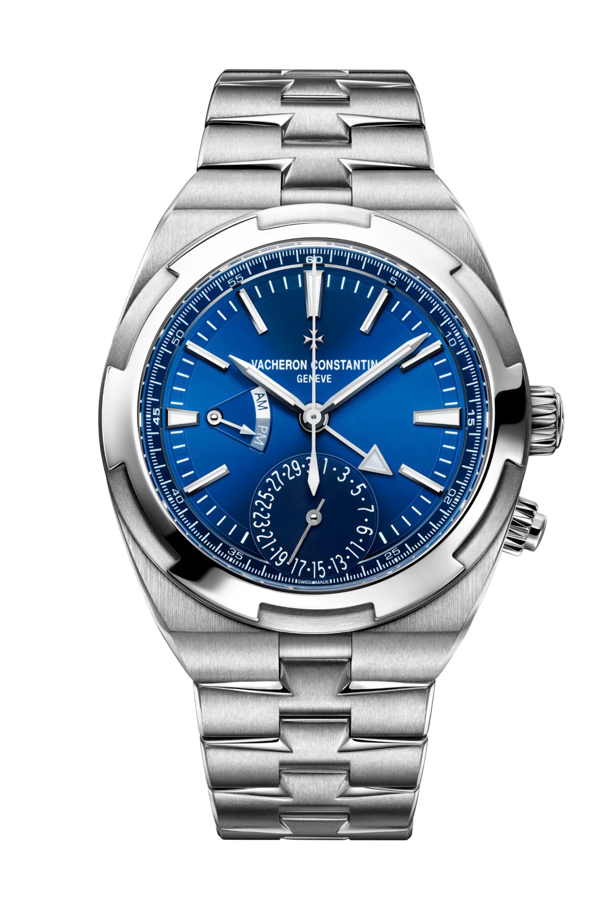
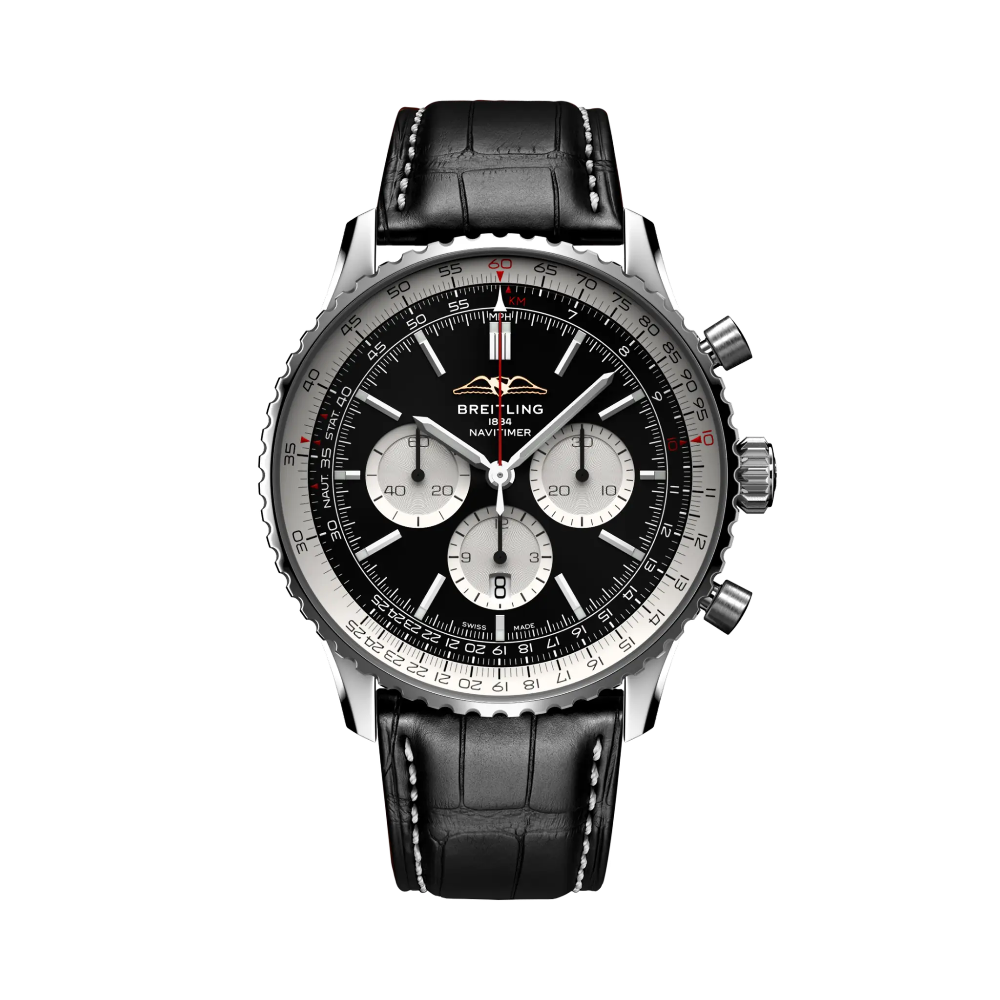
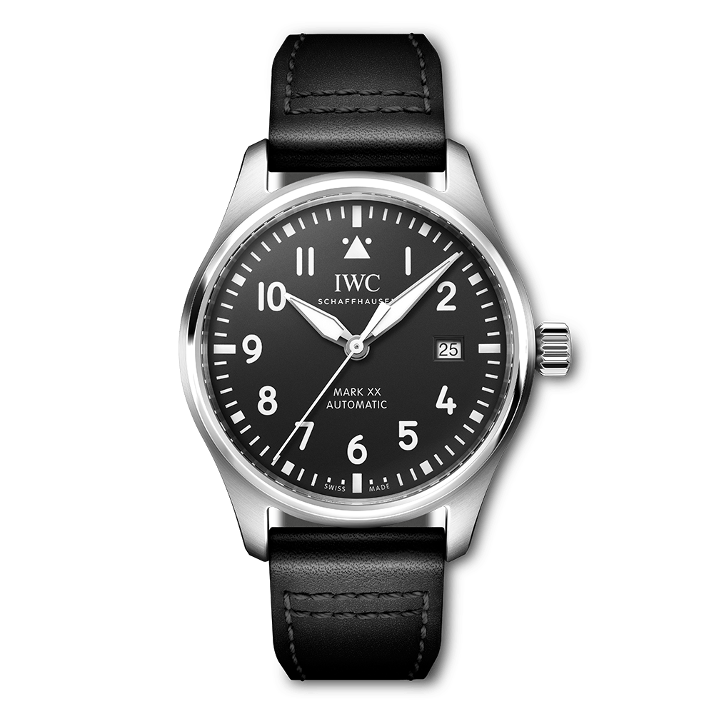

Relógio de mergulho icônico com bracelete de aço.
Ano: 1953

Cronógrafo lunar usado na Apollo 11.
Ano: 1957

Relógio de corrida com design esportivo.
Ano: 1963

Relógio clássico com formato retangular.
Ano: 1917

Relógio de mergulho com design elegante.
Ano: 1976

Relógio de luxo com bracelete octogonal.
Ano: 1972

Relógio reversível com design único.
Ano: 1931

Relógio resistente à água com bracelete de borracha.
Ano: 1996

Cronógrafo de aviação com régua de cálculo.
Ano: 1952

Relógio de piloto com design vintage.
Ano: 1936